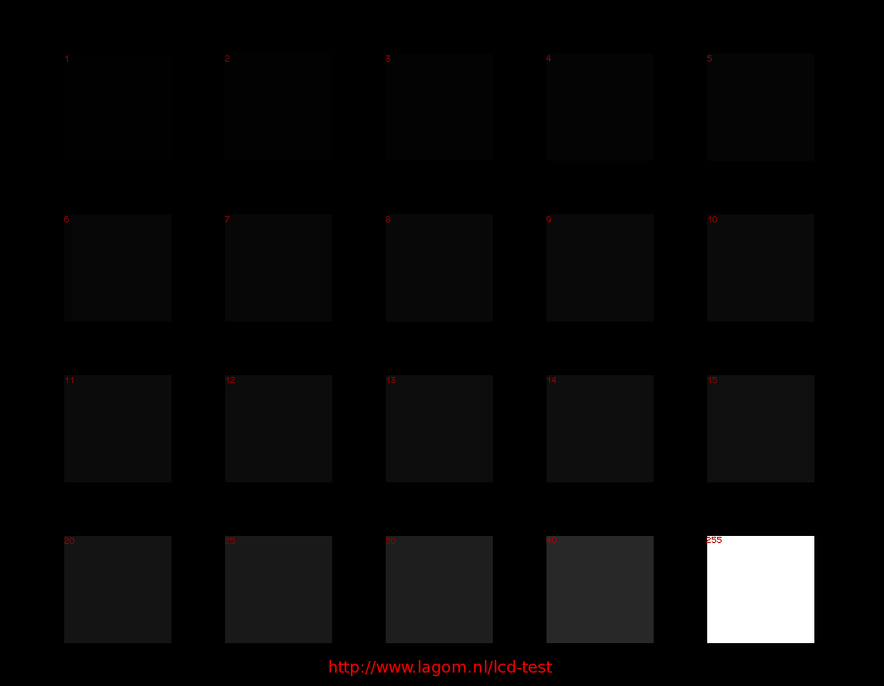
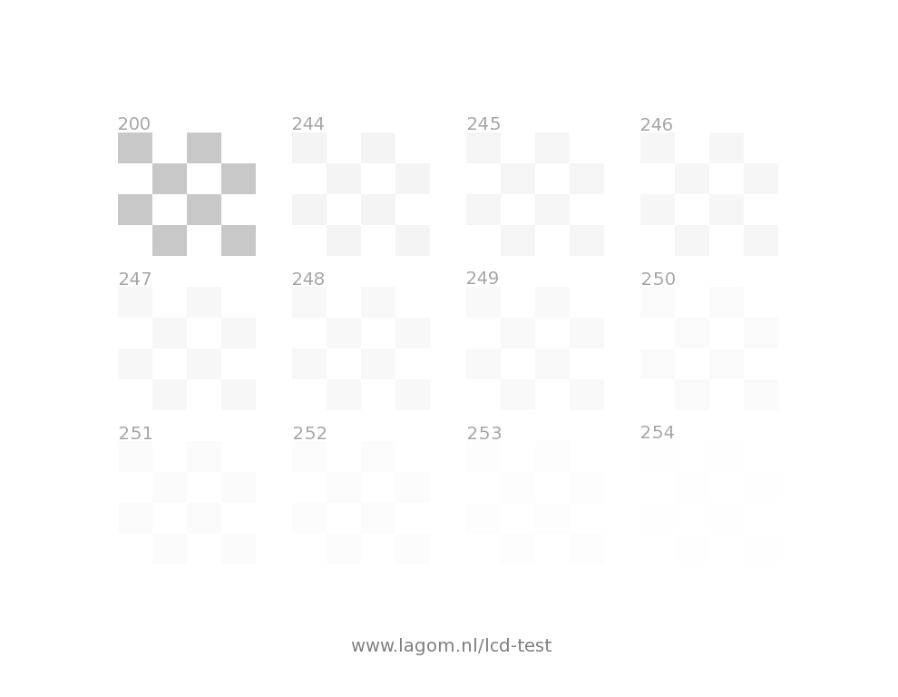

Set both brightness and contrast to 0.
Now increase brightness (black level) until you can just see the inner square below.
Set contrast (white level) to maximum
Decrease contrast until you can see the inner square below.
Remember that brightness controls the black level.
Remember that contrast controls the white level.
